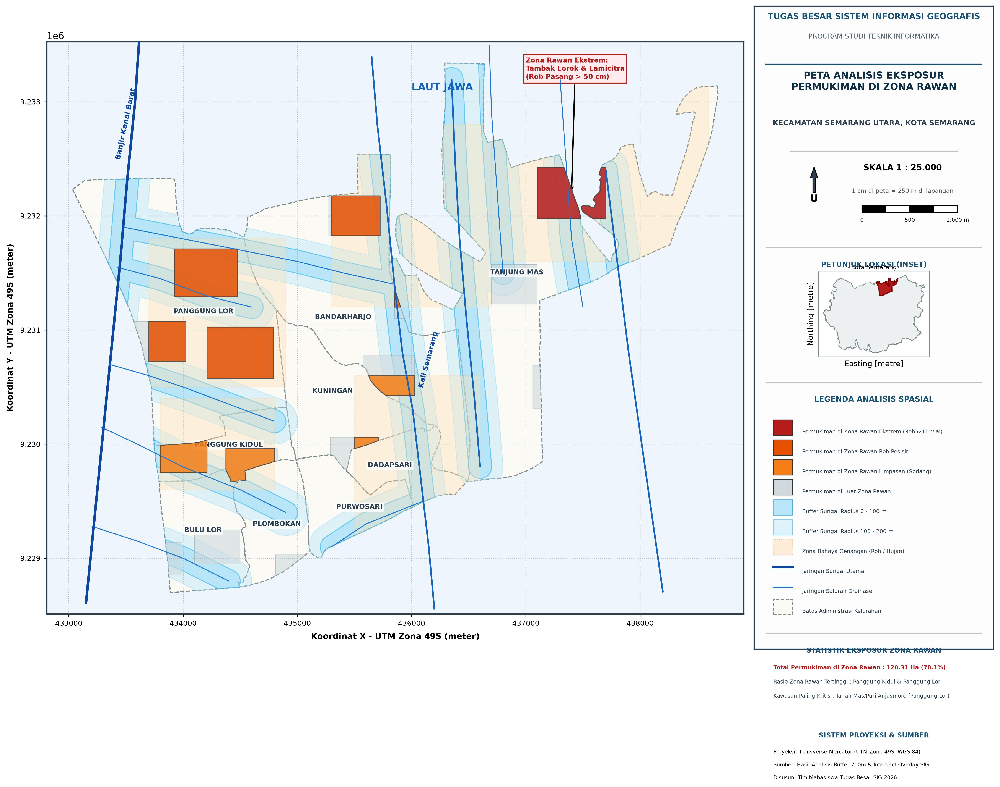

Berapa luas permukiman yang berada di zona rawan genangan rob BPBD?
Overlay intersect permukiman dengan zona rawan genangan BPBD menghasilkan 120,31 Ha atau 70,08% dari total 171,68 Ha kawasan hunian. Ini eksposur statis, bukan genangan saat ini.
Platform WebGIS terintegrasi untuk memetakan genangan rob, sempadan sungai, eksposur permukiman di zona rawan, dan 25 titik survei GPS ground truth — dibangun dengan QGIS, GeoPackage, dan Leaflet.

Rob pasang laut, luapan sungai, dan drainase yang tidak mampu menampung hujan bertemu di ruang permukiman padat Semarang Utara.
Hasil overlay intersect antara kawasan permukiman dan area genangan rob BPBD Kota Semarang. Persentase dihitung dari luas permukiman (171,68 Ha), bukan seluruh luas kecamatan. Ini adalah eksposur statis terhadap zona rawan, bukan genangan saat ini. Sumber zona rawan: BPBD Kota Semarang/InaRISK · snapshot April 2026 · glosarium.
18,89 Ha permukiman berada di zona rawan — 97,37% dari total permukiman kelurahan. Rasio eksposur tertinggi di wilayah kajian.
60,58 Ha berada di zona rawan (95,76%) — luas eksposur terbesar. Berada di koridor Kali Asin/Tanah Mas.
81,99 Ha permukiman bertumpuk dengan sempadan sungai aktif — BKB, Kali Semarang, Kali Baru, dan Kali Asin.
25 titik GPS; 5 titik >40 cm, 2 di antaranya di dalam poligon genangan dan 3 di luar. Rata-rata genangan 30,2 cm; RMSE GCP 0,84 m.
Setiap angka di halaman ini berasal dari operasi geoprocessing yang dapat direproduksi di QGIS dan GeoPackage.
Overlay intersect permukiman dengan zona rawan genangan BPBD menghasilkan 120,31 Ha atau 70,08% dari total 171,68 Ha kawasan hunian. Ini eksposur statis, bukan genangan saat ini.
Panggung Lor mencatat luas eksposur terbesar (60,58 Ha; 95,76%), diikuti Bandarharjo 21,28 Ha (69,81%) dan Panggung Kidul 18,89 Ha (97,37%).
Koridor 200 m mencapai 656,19 Ha (54,93% daratan). Sebanyak 81,99 Ha permukiman berada di dalam koridor sempadan sungai aktif.
Dari 25 titik GPS, 5 titik memiliki genangan >40 cm; 2 di antaranya berada di dalam poligon genangan dan 3 di luar. Rata-rata genangan terukur 30,2 cm, surut 4–8 jam.
Batas administrasi, jaringan air, genangan, sempadan, permukiman, dan titik survei disusun dalam satu kanvas spasial.
Batas kelurahan, permukiman di zona rawan, jaringan air, dan 25 titik survei.
Tiga tahap inti yang menghubungkan lapangan, laboratorium GIS, dan antarmuka WebGIS.
Batas administrasi, jaringan sungai, genangan BPBD, permukiman, dan 25 titik GPS divalidasi di QGIS.
Geoprocessing sempadan 100–200 m, overlay intersect, serta statistik eksposur zona rawan per kelurahan.
Layer GeoJSON, peta tematik, dashboard, dan peta interaktif Leaflet untuk eksplorasi mandiri.
Kelompok 3 — Pemetaan dan Analisis Risiko Banjir & Rob Semarang Utara
Project ini dikembangkan melalui kolaborasi lima anggota tim yang bertanggung jawab pada pengolahan data spasial, analisis GIS, pengembangan WebGIS, survei lapangan, dan dokumentasi.
Buka peta interaktif, telusuri 7 layer tematik, dan bandingkan hasil analisis per kelurahan.